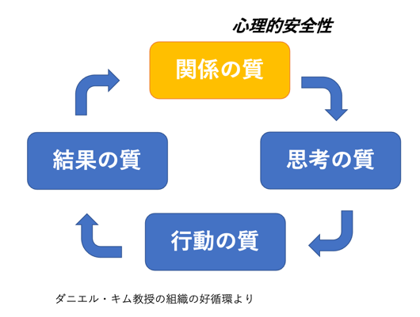

最近、書籍などで「心理的安全性」という言葉をよくみかけます。実はこれ、2012年からGoogleが行った調査結果で注目され始めました。どんな職場が一番パフォーマンスを出せるのかという調査が莫大な資金と4年もの歳月をかけて行われました。そして出た結果は、驚くべきことに、メンバーの質でも、カリスマリーダーの存在でもなく、「職場の心理的安全性が高い部署ほどよかった」ということだったのです。
心理的安全性とは、どういうことか。つまり、人（たとえ上司でも）と異なる意見を率直に言い合える環境があるかどうか、ということです。「自分の意見を、組織のメンバーに率直に言い合うことができる。これが心理的安全性の高い状態」だといいます。皆様の会社（職場）は、いかがでしょうか。
会議の場で、若手社員が勇気を絞って何かを提案したとき「それはもう検討済みだよ」などと一蹴されようものなら、心理的安全性は地に落ちます。それ以後は、忖度が働いたり、萎縮や恐怖が支配したり、心理的安全性が損なわれていくことになります。むしろ「いい視点だね！それは前回も出たけど、やはり大切な視点。毎回、意見をもらえると助かるよ」などと勇気づける言葉がけが大切といいます。
さまざまなコミュニケーションの場で、ちょっとした言葉が心理的安全性を高めたり壊したりすることがあります。本書では、その具体的声かけや問いかけの例がBad&Goodで示され、思わずなるほどと腹落ちします。例えば、社内でよく行われる1on1の対話。「最近、どう？」と聞くのはNGです。それはつまり、君のことはよく知らないけど最近どうなの？と受け取られてしまうからです。（恥ずかしながら私は、このセリフを使った経験があります）望ましいのは「これとこれと先週はいろいろやってくれたけど、どれが一番君の成長につながったと思う？」といった問いかけや、「あのプロジェクトを見てると、成長してるな〜って思えるよ」といった声がけです。リーダーがメンバーの仕事ぶりをあれやこれやあげていけば「あぁ、自分の仕事をみていてくれるんだなぁ」と実感できます。
実は著者の田中さん、ワンマン社長として、体育会系の根性論を振りかざしてチームを牽引してきたといいます。しかし、離職が相次ぎ行き詰まってしまう。心理的安全性の低い会社だったと述懐します。そうした苦い経験も活かし、現在は、Uniposというサービスを通じて、心理的安全性を高めることで組織改革のお手伝いをしている方です（345社で導入実績あり）。
本書には、新人や転職組が会社に馴染みやすい言葉がけ、人材が育つ環境作りのための言葉がけ、経営トップがメンバーに伝える声がけなど、さまざまな場面での声がけや問いかけの事例があります。「大丈夫？」→つまずいているのはどのあたり？ 「2度とミスするな」→これを次の糧にしよう 「まずは一人でやってみて」→そばにいるから大丈夫。声かけを変えるだけで、離職率が下がり、売上高がアップし、ミスやトラブルが激減するなら、やってみる価値はありますね。

ダニエルキム教授（元MIT）の提唱した組織の好循環のスタートポイントは、関係性の質。つまり本書でいう職場の心理的安全性の質ということでしょう。
素朴な疑問、違和感をいつでも気兼ねなく言える風土、自由闊達の意見を言い合える状態を目指す、、、むかしから組織改革などといった四角い言葉の裏で叫ばれてきたことですが、実は、日々の小さな言葉がけや問いかけの蓄積の先にそれがあるのかもしれません。理屈より実践。働きがいのある職場作りのために心理的安全性の高い空気を作っていきたいものです。ぜひ、本書を参考に、明日から試しに使ってみませんか。